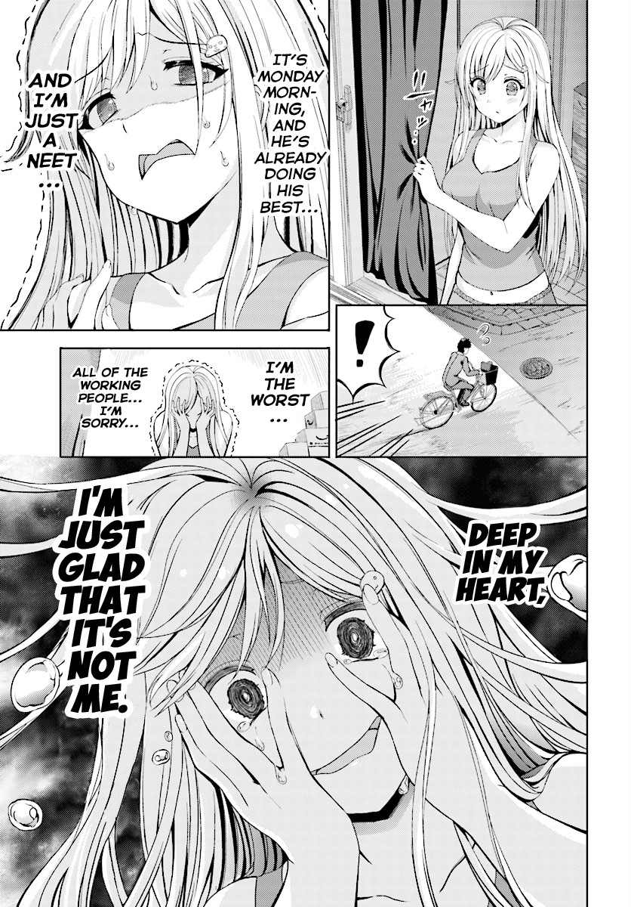
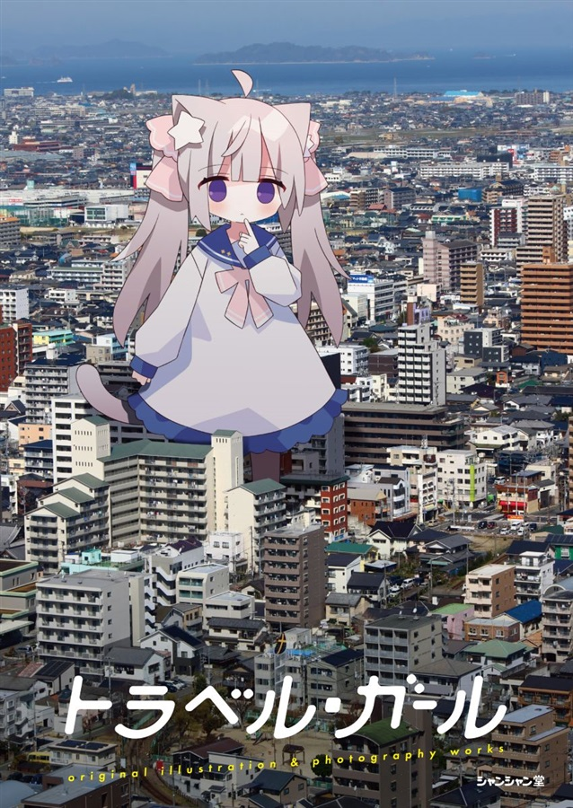
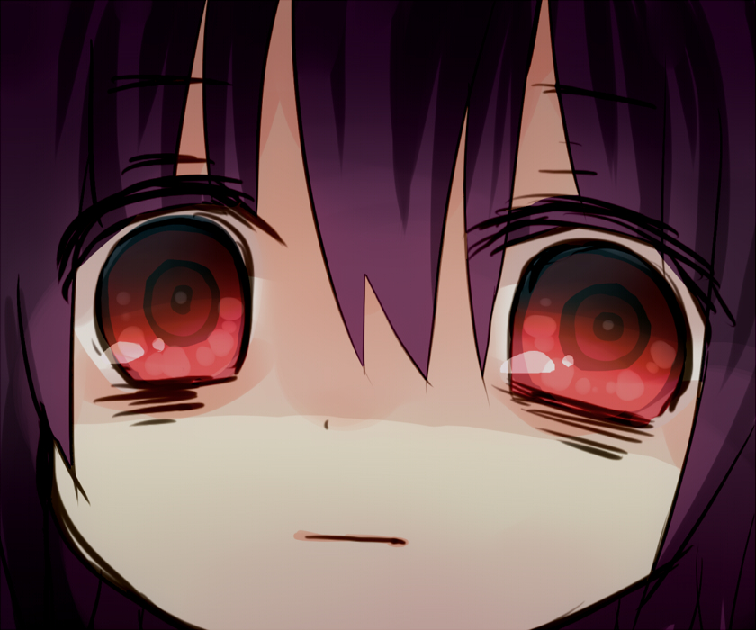
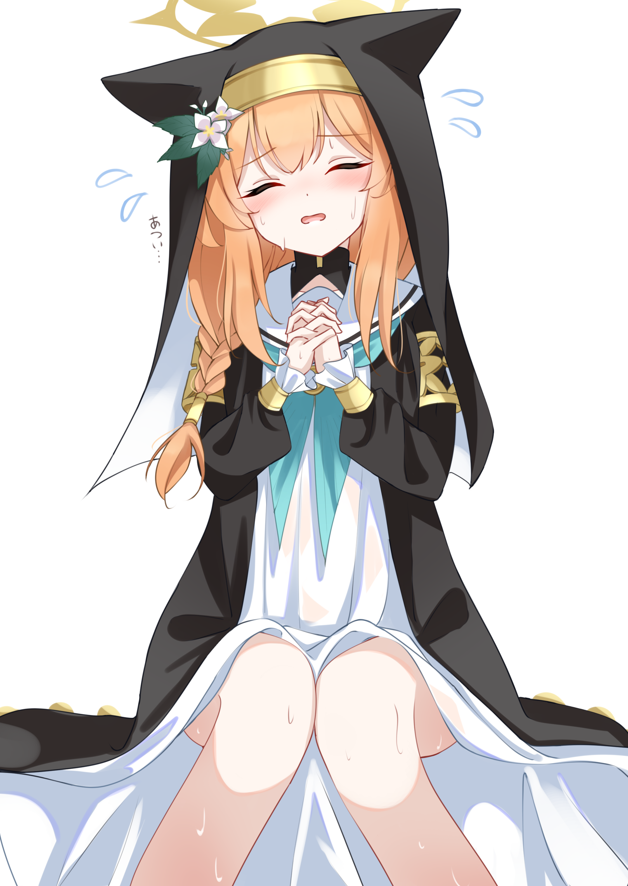
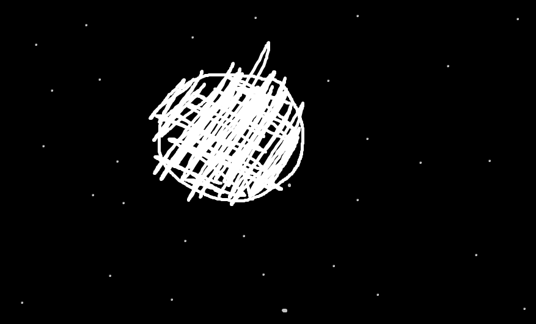
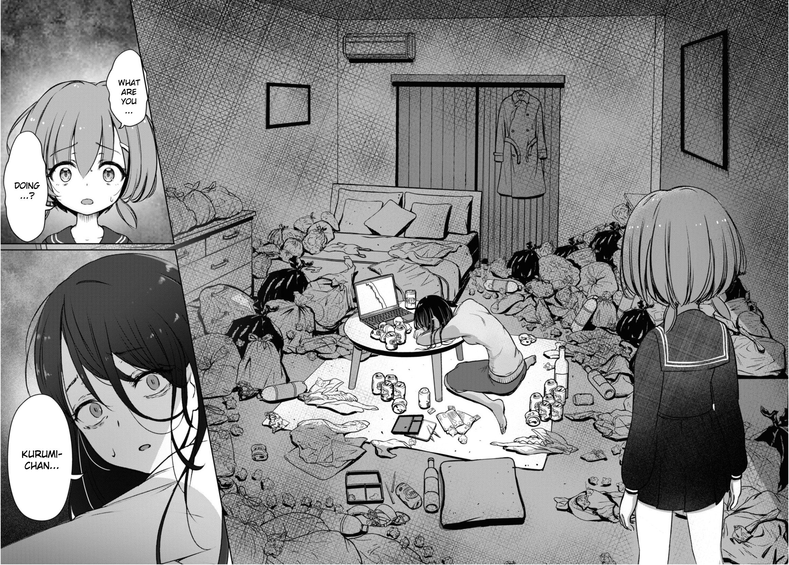
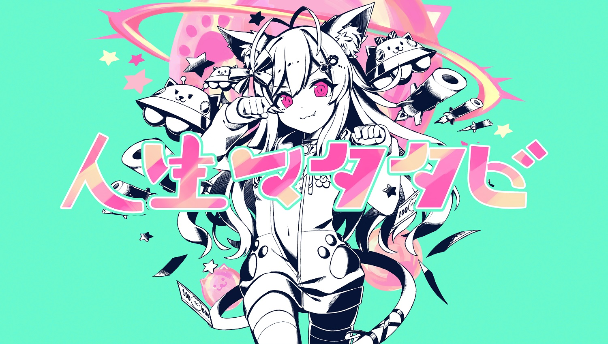
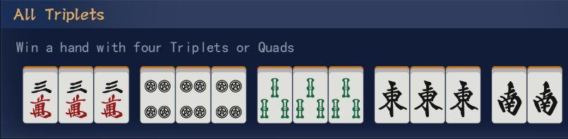
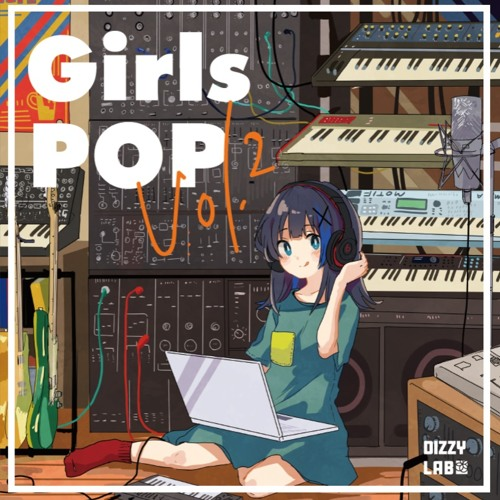
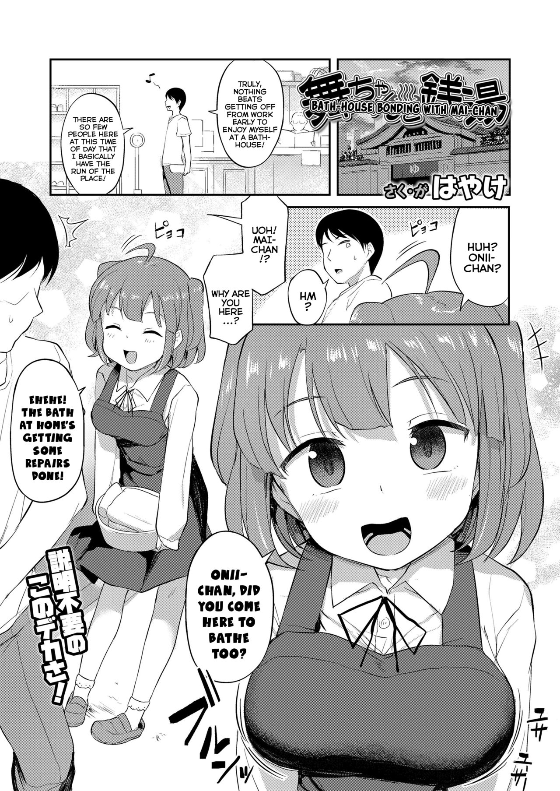

Week 9983 - Neeko
I fucking love being a NEET. Imagine a life of no responsibilities, no hardships, no thinking hard about the future. A life of just existing for the sake of existing. Seeing everyone waste their lives working just brings a tear to your eye, doesn't it? Don't they know that they're wasting their lives like that? I mean, think about it. These... working class, eww, yeah... they work hard for their future by sacrificing their present. Isn't that messed up? Isn't that putting the cart before the horse? Meanwhile, NEETs are smart. They understand that there's no time like the present. They understand that simply spending your time as you wish, without a care in the world, and enjoying the present, is how we're all supposed to live. Work for the future? This is the future!
To work is to lose. To find a job is to find your end.
Look at everyone else. They're all there, walking forward, leaving us NEETs behind. Walking forward to a mediocre life, a mediocre job, a mediocre wife, and a mediocre end. The only ones who can rebel against this pathetic future are the NEETS who reject the social norms. The ones who aren't scared to turn around from what's normal. To leave the normality of the world. This world is a stage, and the NEETs are the audience. We reject to participate in this farce! Stand up against the oppression of the smart, the rich, the lucky, and the ones with social connections! Reject the world! Reject yourself!
I don't want to work. I don't want to move from where I am. I am contented with where am I, and is that not enough? Like a still lake, undisturbed. A bamboo in the middle of a storm, that's what I am. NEETS are the pinnacle of human existence. It is the most noble thing for a man to reject the programming of those around him, and choose his own path. To you, victims of fate and masters of rejection, I wish only for the best.
Misaki isn't real.
Week 774 - Travel Girl
Cute giant cat girl.
Week 322 - Misono Mika
How do you earn enough money to whale a Mika in 3 days?
Consider the fact that you've already spent all of your remaining money and have exactly zero balance in your wallet. What do you do?
The first thing that comes to mind is borrowing money. But if you're a friendless loser, that's not possible. So the second option is to go to loansharks. Very reasonable, yes. But the problem is that loansharks is that their rates are absolutely fucked and you know it's almost impossible to pay them back.
So the only option left was to gamble. Loan the money, gamble it, and win enough to pay your debts immediately while having enough money to roll for a Mika. It was the only path left.
Of course, there are drawbacks. If you loan from a reputable place, all you'll get is a jail sentence. But if you loan from more... questionable peoples, the price you need to pay is a lot more damning. But you did get good money. Good money that can be used to get Mika and save our lives. It's an all-or-nothing gamble.
I had an old college friend hook me up to one. Desperate people come to the guy, there's lots of them here in this little hellhole. Made a deal that I was allowed to borrow money in exchange for helping with an operation of theirs in Borneo if I couldn't pay back. I was never told what's there. I was planning on running away if I couldn't pay them back, but you know how it goes when you try to pull that shit. At that time I probably wasn't in the right mindset, since I was so desperate. I had to win Mika. A promise is a promise, and there was no option not to roll for her. And for that, money was needed. Clinging to the blade of a knife was the only choice.
Now, you've got your base money. Congratulations. You spent a day on that venture. The next step is growing that money. Remember, you need to have enough to pay back (I borrowed with a 10% interest rate, and was given three months to settle) and enough money to roll for mika. Which was triple the amount I borrowed. Finding a gambling den in this shithole that would deal with the large amounts of money I had was hard. Almost impossible, since I didn't know enough rich people for it. So I kept asking around.
Did I find it? Yup. Fucking poker. There are actually people who play high stakes poker here. I fucking hate poker, what a fucking retarded ass game. But the rules are simple. And the rates are high enough.
If I was playing defensively, it would be easy. But I needed to triple it. And my opponents were all old people and strange housewives.
There was probably no chance of winning. Hell, even cheating was kinda hard. I could pull it off in tong its, but poker was different.
My tip if you do play poker betting on your life: do NOT tilt. DO NOT FUCKING TILT. If you tilt it's literally over. Just play the natural game and get the natural win.
...and then?
I messed up--- at first. I've had experience playing poker, but not with high stakes. When you're betting your life, everything feels wrong. It's like, you know one mistake will drag you to hell. You can't fuck up, so you scrutinize every smile and every hand you have, but it's impossible. You will fuck up. Those hands will never stop trembling. Your eyes will feel hot. Everything feels blank, and you'll stop to wonder what the fuck are you doing with your life.
But... you'll cross a line somewhere. A line of "fuck it, we ball". A point of no return, almost like being drunk. You know you're gonna fuck up, but who cares? So just enjoy the game. Just have fun. Isn't gambling fun? This was the life! Let the endorphins rush to your mind as you gamble everything for the sake of winning. There was no need for cheating. Just a pure love of gambling, of chances and probabilities. The future and the past disappears, and you're left with you and a simple push-or-fold decision. The thrill of risk, the thrill of reward.
At some point, I reached that state.
Do you know the gripping feeling of getting an iishanten yakuman? And then that wonderful blade sound giving you YAKUMAN READY? Do you know of that feeling, of winning that yakuman you worked so hard to build? Sacrificing cheap wins, skipping rons? Holding that smile, as you slowly draw tiles for the sake of a giant moment of triumph? Do you know that feeling when you see that fucking tsumo button?
Yeah I fucking do. I absolutely fucking do.
I'm never doing that again.
Week 4444 - Iochi Mari
It's getting hot, innit? I love you Mari. I love you I love you I love you so much. The absolute state of retards who wasn't able to get her sportfes version. Retards like me. Aiiiiiieeeee. I can't cope. I can't cope. It's been months and I still can't cope. What the fuck am I supposed to do? Oh no no no no, what if I don't get Mika as well???? The state, the absolute state. Help. Help. Help. RNG is such a bullshit thing, please nerf. Nerf.
Fuck randomness. Fuck choosing things based on dice rolls. Fuck gacha. Why can't things be clear cut, like chess? Chess general doko? In tg? But there's no chess gacha... why hasn't anyone taken advantage of it? Imaging how much a chess gacha would make! ...what? They're gonna earn nothing since gacha players are all retarded and can't learn a game with 6 moves? No no no no, shut the fuck up. Sure chess is a skill-based game but when everyone's retarded, no one is. Imaging a chess gacha tourney, and we've got all the best chess players in the world, and people go OH NO NO NO NO NO NO HE MISSED THE FOORRRK HE MISSED THE FOOOOOORRRRRK RETARD RETARD OH NO NO NO NO HE'S GOING FOR THE QUEENS GAMBIT IS HE RETARDED???? And then this time, copebot posters will reign supreme and muh flow muh SOVL faggots will kill themselves after pedro's deep blue bot or whatever kills him without even breaking a sweat (bots don't sweat).
I love Mari so much bros...
Week 1234 - Take your meds and sleep
Take your meds and sleep. Good night. Administer your medication, consume your capsules, ingest your prescription, imbibe your pills, swallow your supplements, partake of your pharmaceuticals, gulp down your remedies, assimilate your antidotes, delve into your doses, embrace your elixirs, indulge in your infusions, absorb your apothecaries, savor your substances, seize your serums, devour your drugs, feast upon your formulas, relish your remedies, acquire your antidotes, imbibe your ingestibles, procure your pharmaceuticals, feast on your pharma, enjoy your extracts, ingest your immunizations, nurture your nutraceuticals, quaff your prescriptions, slurp your solutions, gobble up your generics.
Meds meds meds meds meds meds meds meds meds meds meds meds meds meds meds meds meds meds meds meds meds meds meds meds meds meds meds meds meds meds meds meds meds meds meds meds meds meds meds meds meds meds meds meds meds meds meds meds meds meds meds meds meds meds meds meds meds meds meds meds meds meds meds meds meds meds meds meds meds meds meds meds meds meds meds meds meds meds.
Go to sleep. Sleep. Close your eyes and sleep. Zzz good night. Rock a bye baby. Sleep. Sleep. Sleep.
Close your eyes. Close your eyes now. Sleep.
Take your meds and sleep.
Week zero - Ura Zero
Off all the times to get ura zero, it had to be this moment. This one particular moment. What the fuck. Everyone else gets an ura 3 hit to me and my teammates, but not me, no sir. For me, I get an ura zero. Ura fucking zero. URA ZERO URA ZERO URA ZERO. Bullshit fucking game.
Let's turn back time. South 4. I'm third. In any other game, I'd play it safe. But no. This game, I need to get 1st while keeping the sara at third or fourth.
So I fucking sashikomi to the dealer to extend the round. Sure, it's a dealer riichi but my haipai was kusoshits and wasn't the comeback hand to first so I had to extend the round before anyone else won. I know it was a dealer riichi. But sometimes, that's just how gambling goes. You need to take risks to secure a chance for a comeback. So I dropped my pants and prepared to get fucked in the ass by that dealer riichi. And you know what mahjong says? "You'll get ass-fucking alright-- through your mouth."
And I get hit with a dealer ura 3. Why? Because fuck me, that's why.
But I suck it up. You know why? Because when the goal is first, you have no choice but to suck it all up and keep pushing until the comeback.
And this game, THIS DUMB FUCKING ASS GAME, had the audacity to give me a good chinitsu haipai. CHINITSU. The moment I saw that haipai, I knew I was going to get it. It was fate. I was going to reach tenpai with it, closed. It was the only way after all. And you know what? Mahjong, you see, loves a good joke. Some people are blessed by the tiles, and some are the clowshows. That's me. I'm the clown. The flowslave.
So that chinitsu haipai. I pushed forward. I drew, I discarded. I ignored everything else around me, only focused on building this closed chinitsu. I think I heard someone kan, but I didn't notice. As I drew, the haipai got closer and closer. Draw, release. Draw, release. And then...
I heard that tell-tale sound. The sound of a button popping out. "Riichi." Of course I reached closed tenpai. I also knew, this hand would win. I checked the wall -- two dora indicators. For the first time in my life, I counted my yaku: riichi, ippatsu, tsumo, ippeikou, closed chinitsu. I counted again and again. This happened in a fraction of a second. My mind looped those yaku. I did try finding an extra one, like pinfu or itsuu, but nothing. However, I still went for it. When I saw that riichi button, I knew... it would all come down to one thing: an ura. A single ura. One, single, blessed ura, was all I needed. The ura to save my team, the ura to save myself. The ura of fate, the ura of destiny.
I press riichi.
In that moment, a flashback came to me. Just before that game, my teammates and I were having a friendly, and I was last (as usual). Back then, I seriously wanted to take first, to assure my teammates I had what it took to bring our team a win. So carefully, I built my comeback hand... and ron'd.
SORE RON DE. Riichi, tanyao, dora 3----- and ura 3. Baiman. And you know what place I got, after all that hard work? 3rd.
My teammates reasured me, saying "See? You're not a lucklet, you got ura 3!" while ignoring I got 3rd place nervously.
--- then I returned to the present. The moment waiting as I got my next draw was painful. I closed my eyes. I was waiting for the sword to chop my neck. I knew, I just knew, I'd get my tile. Of course I'd get it. My instinct forged from years of mahjong and gambling told me I'd get it. And then... I did. Ippatsu.
Tsumo. Ahh, yatto kita.
Riichi. Ippatsu. Tsumo. Ippeikou. Chinitsu.
Ura zero. Ura zero. Ura zero. Ura zero. Ura zero. Ura zero. Ura zero. Ura zero. Ura zero. Ura zero. Ura zero. Ura zero. Ura zero. Ura zero. Ura zero. Ura zero. Ura zero. Ura zero. Ura zero. Ura zero. Ura zero. Ura zero. Ura zero. Ura zero. Ura zero. Ura zero. Ura zero. Ura zero. Ura zero. Ura zero. Ura zero. Ura zero. Ura zero. Ura zero. Ura zero. Ura zero. Ura zero. Ura zero. Ura zero. Ura zero. Ura zero. Ura zero. Ura zero. Ura zero. Ura zero. Ura zero. Ura zero. Ura zero. Ura zero. Ura zero. Ura zero. Ura zero. Ura zero. Ura zero. Ura zero. Ura zero. Ura zero. Ura zero. Ura zero. Ura zero. Ura zero. Ura zero. Ura zero. Ura zero. Ura zero. Ura zero. Ura zero. Ura zero. Ura zero. Ura zero. Ura zero. Ura zero. Ura zero. Ura zero. Ura zero. Ura zero. Ura zero. Ura zero. Ura zero. Ura zero. Ura zero. Ura zero. Ura zero. Ura zero. Ura zero. Ura zero. Ura zero. Ura zero. Ura zero. Ura zero. Ura zero. Ura zero. Ura zero. Ura zero. Ura zero. Ura zero. Ura zero. Ura zero. Ura zero. Ura zero. Ura zero. Ura zero. Ura zero. Ura zero. Ura zero. Ura zero. Ura zero. Ura zero. Ura zero. Ura zero. Ura zero. Ura zero. Ura zero. Ura zero. Ura zero. Ura zero. Ura zero. Ura zero. Ura zero. Ura zero. Ura zero. Ura zero. Ura zero. Ura zero. Ura zero. Ura zero. Ura zero. Ura zero. Ura zero. Ura zero. Ura zero. Ura zero. Ura zero. Ura zero. Ura zero. Ura zero. Ura zero. Ura zero. Ura zero. Ura zero. Ura zero. Ura zero. Ura zero. Ura zero. Ura zero. Ura zero. Ura zero. Ura zero. Ura zero. Ura zero. Ura zero. Ura zero. Ura zero. Ura zero. Ura zero. Ura zero. Ura zero. Ura zero. Ura zero. Ura zero. Ura zero. Ura zero. Ura zero. Ura zero. Ura zero. Ura zero. Ura zero. Ura zero. Ura zero. Ura zero. Ura zero. Ura zero. Ura zero. Ura zero. Ura zero. Ura zero. Ura zero. Ura zero. Ura zero. Ura zero. Ura zero. Ura zero. Ura zero. Ura zero. Ura zero. Ura zero. Ura zero. Ura zero. Ura zero. Ura zero. Ura zero. Ura zero. Ura zero. Ura zero. Ura zero. Ura zero. Ura zero. Ura zero. Ura zero. Ura zero. Ura zero. Ura zero. Ura zero. Ura zero. Ura zero. Ura zero. Ura zero. Ura zero. Ura zero. Ura zero. Ura zero. Ura zero. Ura zero. Ura zero. Ura zero. Ura zero. Ura zero. Ura zero. Ura zero. Ura zero. Ura zero. Ura zero. Ura zero. Ura zero. Ura zero. Ura zero. Ura zero. Ura zero. Ura zero. Ura zero. Ura zero. Ura zero. Ura zero. Ura zero. Ura zero. Ura zero. Ura zero. Ura zero. Ura zero. Ura zero. Ura zero. Ura zero. Ura zero. Ura zero. Ura zero. Ura zero. Ura zero. Ura zero. Ura zero. Ura zero. Ura zero. Ura zero. Ura zero. Ura zero. Ura zero. Ura zero. Ura zero. Ura zero. Ura zero. Ura zero. Ura zero. Ura zero. Ura zero. Ura zero. Ura zero. Ura zero. Ura zero. Ura zero. Ura zero. Ura zero. Ura zero. Ura zero. Ura zero. Ura zero. Ura zero. Ura zero. Ura zero. Ura zero. Ura zero. Ura zero. Ura zero. Ura zero. Ura zero. Ura zero. Ura zero. Ura zero. Ura zero. Ura zero. Ura zero. Ura zero. Ura zero. Ura zero. Ura zero. Ura zero. Ura zero. Ura zero. Ura zero. Ura zero. Ura zero. Ura zero. Ura zero. Ura zero. Ura zero. Ura zero. Ura zero. Ura zero. Ura zero. Ura zero. Ura zero. Ura zero. Ura zero. Ura zero. Ura zero. Ura zero. Ura zero. Ura zero. Ura zero. Ura zero. Ura zero. Ura zero. Ura zero. Ura zero. Ura zero. Ura zero. Ura zero. Ura zero. Ura zero. Ura zero. Ura zero. Ura zero. Ura zero. Ura zero. Ura zero. Ura zero. Ura zero. Ura zero. Ura zero. Ura zero. Ura zero. Ura zero. Ura zero. Ura zero. Ura zero. Ura zero. Ura zero. Ura zero. Ura zero. Ura zero. Ura zero. Ura zero. Ura zero. Ura zero. Ura zero. Ura zero. Ura zero. Ura zero. Ura zero. Ura zero. Ura zero. Ura zero. Ura zero. Ura zero. Ura zero. Ura zero. Ura zero. Ura zero. Ura zero. Ura zero. Ura zero. Ura zero. Ura zero. Ura zero. Ura zero. Ura zero. Ura zero. Ura zero. Ura zero. Ura zero. Ura zero. Ura zero. Ura zero. Ura zero. Ura zero. Ura zero. Ura zero. Ura zero. Ura zero. Ura zero. Ura zero. Ura zero. Ura zero. Ura zero. Ura zero. Ura zero. Ura zero. Ura zero. Ura zero. Ura zero. Ura zero. Ura zero. Ura zero. URA ZERO URA ZERO URA ZERO URA ZERO URA ZERO URA ZERO URA ZERO URA ZERO URA ZERO URA ZERO URA ZERO URA ZERO URA ZERO URA ZERO URA ZERO URA ZERO URA ZERO URA ZERO URA ZERO URA ZERO URA ZERO URA ZERO URA ZERO URA ZERO URA ZERO URA ZERO URA ZERO URA ZERO URA ZERO URA ZERO URA ZERO URA ZERO URA ZERO URA ZERO URA ZERO URA ZERO URA ZERO URA ZERO URA ZERO URA ZERO URA ZERO URA ZERO URA ZERO URA ZERO URA ZERO URA ZERO URA ZERO URA ZERO URA ZERO URA ZERO URA ZERO URA ZERO URA ZERO URA ZERO URA ZERO URA ZERO URA ZERO URA ZERO URA ZERO URA ZERO URA ZERO URA ZERO URA ZERO URA ZERO URA ZERO URA ZERO URA ZERO URA ZERO URA ZERO URA ZERO URA ZERO URA ZERO URA ZERO URA ZERO URA ZERO URA ZERO URA ZERO URA ZERO URA ZERO URA ZERO URA ZERO URA ZERO URA ZERO URA ZERO URA ZERO URA ZERO URA ZERO URA ZERO URA ZERO URA ZERO URA ZERO URA ZERO URA ZERO URA ZERO URA ZERO URA ZERO URA ZERO URA ZERO URA ZERO URA ZERO URA ZERO URA ZERO URA ZERO URA ZERO URA ZERO URA ZERO URA ZERO URA ZERO URA ZERO URA ZERO URA ZERO URA ZERO URA ZERO URA ZERO URA ZERO URA ZERO URA ZERO URA ZERO URA ZERO URA ZERO URA ZERO URA ZERO URA ZERO URA ZERO URA ZERO URA ZERO URA ZERO URA ZERO URA ZERO URA ZERO URA ZERO URA ZERO URA ZERO URA ZERO URA ZERO URA ZERO URA ZERO URA ZERO URA ZERO URA ZERO URA ZERO URA ZERO URA ZERO URA ZERO URA ZERO URA ZERO URA ZERO URA ZERO URA ZERO URA ZERO URA ZERO URA ZERO URA ZERO URA ZERO URA ZERO URA ZERO URA ZERO URA ZERO URA ZERO URA ZERO URA ZERO URA ZERO URA ZERO URA ZERO URA ZERO URA ZERO URA ZERO URA ZERO URAZEROURAZEROURAZEROURAZERO.
10 han. Baiman. 3rd place.
i'm gonna shamikill myself.
Week 504 - The Moon.
The moon is beautiful tonight.
Week 2018 - Loca Love 1
vndb
This is the pinnacle of moege. No, the pinnacle of romance as a literary genre. No other work even comes close. If one had to look for the perfect romance story, this is it. Yes, the end drama was kind of retarded, but it is overlooked by just how perfect everything else is. Not even being ironic. Someone was probably murdered just to bring this to life. It truly makes you fall in love in a perfect ideal romance.
Like, holy shit. It's such a simple (and retarded) concept. Your apartment burned, now what? This cute coworker of yours finds out, and she... suggests you stay with her. In her apartement. Where she lives alone. When you first read it, you'll think, what the fuck is this retarded shit?? But as you read, you'll keep asking for more of this retarded shit. You WILL be hit by the ideal love story. The ideal romance. The ideal love. I swear this vn is why I'll never get a girlfriend, because no IRL romance can ever compete with the kino-est portrayal of love. What's the point when it'll never be as ideal as this?????
AAAAHHHHHHH!!! How the fuck does this VN exist? I give you my true and honest opinion as someone who loves moege more than anyone. Nothing tops this when it comes to love. Perhaps, some works come close to it (like Sanoba Witch's Meguru route, Fureraba, Hoshi Ori), but nothing surpasses it. How do you even surpass the highest peak of romantic literature? You can't.
This is the greatest love story ever told.
...skip Loca Love 2 and 3. Fuck you retards, you didn't have to go on your way to cuck Hiwa like this and shove it in your face. Absolutely fuck you.
Week 1944 - FX Fighter Kurumi-chan
mangadex
Are you a mahjonger? You love betting your life? I bet you think you are literally Akagi. If so, come join the world of Forex Trading! Easy money! Do you ever wonder why the rich get richer, and the poor get poorer? It's because you're not smart enough. And the smart people know where the money goes, and the money goes through the flow of currency from one form to another. And it's so easy! Just buy low, and sell high! You can be richer than your wildest imaginations if you come to the wonderful miracle world of Forex trading!
You're a mahjonger, right? You've learned push and fold decicions, right? Now it's time to apply that knowledge to earn you some money.
Week 1943 - Izmir March
Kebab good. Baklava good.
Week 1942 - Sex with a Cat
video
I've been asked many time, is it actually possible to have sex with a cat? According to personal experience, no. It hurts. It's too tight. Human dick is too big for cats, unless your fucking a lioness or any big cat, but that's a different story. Normal household cats are hard to fuck. First of all, say goodbye to natural lubrication. Bring a lot of lube if you really are determined to fuck your cat. They'll move a lot and try killing you. And the worst part of all, it doesn't even feel good. You couldn't even call that sex. That was mere masturbation with a very angry cat.
But what if I stick it in the assho- no. Don't even consider it. Please. It's not worth it... unless you really want to fuck a cat? And it absolutely smells.
Safe sex with cats starts with awareness. Perhaps, be satisfied on rubbing your dick on your cat? The added thrill of the threat that your cat can just fuck your dick up with a few scratched may add to your pleasure. No, don't get blowjobs from cat they WILL bite.
...Huh? Sex with Ichihime? Sure.
Week 211 - Itoko

youtube
Oh boy, where do I even begin with Erio Towa's song "Itoko"? It's like taking a wild rollercoaster ride through the quirkiest corners of the universe. Buckle up, folks!
First off, let's talk about the lyrics. They're so delightfully random that they make you question the very fabric of reality. I mean, who else can seamlessly blend a heartfelt ode to a long-lost cousin with a chorus about chicken nuggets? It's pure genius, I tell you. And don't even get me started on the bridge, where Erio takes us on a lyrical detour through a parallel dimension of nonsensical wordplay. It's like being lost in a maze made of laughter.
Now, let's talk about Erio's vocals. They're like a playful kitten chasing a laser pointer, bouncing effortlessly between sweet and powerful. I swear, she could sing the instruction manual for a toaster and still make it sound like a symphony. It's a rare talent, folks, and Erio wields it with mischievous charm.
And let's not forget about the instrumental arrangement. It's an explosion of vibrant colors and quirky beats that will make your hips sway involuntarily. The combination of ukulele, kazoo, and an unexpected banjo solo is a recipe for musical hilarity. You can't help but smile and tap your feet, even if you have no idea what's going on.
"Itoko" is the kind of song that leaves you scratching your head in awe and chuckling with delight. It's a delightful blend of whimsy, absurdity, and sheer talent that only Erio Towa could deliver. So, if you're in need of a good laugh and a catchy tune to brighten your day, look no further. Give "Itoko" a listen, and prepare to enter a world where logic takes a vacation and laughter reigns supreme..
Week A1 - Poker Soul

playstore
So why is poker a better gambling game that mahjong? First of all, fuck mahjong. The only ones playing it really are sunk-cost fallacy fags who’s been playing this game for decades and can’t pull out of this game because it’s the only activity that they can “express” they skill – which is funny because these retards actually believe this. Mahjong is a game of luck, and no amount of coping can deny this. Yeah, I’m using a buzzword, who the fuck cares mahjong is a buzzword. So okay, we established that mahjong is a game of luck. What’s next to compare, which game is more fun? Spoiler: it’s poker. Shut the fuck up mahojngtards, ask any normal person and that’s the answer they’ll give. “But who cares about normalfags—” imagine being so socially inept that you can’t understand the absolute basics of talking to people and being able to connect with them. Go watch fucking Barney the purple fuckasour, you autistic sperg.
Now we established the superiority of poker over mahjong both in a technical and social level. But let’s analyze the platforms next (take note that I’m not gonna go over the convenience level of each, since poker mogs mahjong out of the park no questions asked). And as we all know, the greatness of any video game lies in the quality of the cunny. Who is the best cunny in Mahjong Soul right now? It’s Nanodesu, Fake Cat or Chiori/Koromo, the order varying on what flavor do you fancy. But meanwhile, instead of quantity, Poker Soul opts for quality; I don’t know the name of this particular cunny, but we all know the long pink hair is the greatest of hairstyles don’t argue with me on this. Plus, she's top cute. It’s no contest. Poker Soul wins. What the fuck, Mahjong doesn’t even try to put up a fight. I am going to the SUPERIOR game and SUPERIOR gacha, thank you very much.
Week of me being the only one updating this - AI (Normal)

I for one welcome our AI overlords to destroy the meatbag menace.
Week who cares? - Jun Murakami (村上 淳)

The guy that carried Drivens to another final. An underrated player that suffers the incompetence of his teammates. Seriously, why the fuck can't Sonoda win shit when it matters? And let's not talk about that point-giving midget Maruyama. This was our year Drivensbros... ;_;
Week ?? - McChicken

For me, it's the McChicken. The best fast food sandwich. I even ask for extra McChicken sauce packets and the staff is so friendly and more than willing to oblige.
One time I asked for McChicken sauce packets and they gave me three. I said, "Wow, three for free!" and the nice friendly McDonald's worker laughed and said, "I'm going to call you 3-for-free!".
Now the staff greets me with "hey it's 3-for-free!" and ALWAYS give me three packets. It's such a fun and cool atmosphere at my local McDonald's restaurant, I go there at least 3 times a week for lunch and a large iced coffee with milk instead of cream, 1-2 times for breakfast on the weekend, and maybe once for dinner when I'm in a rush but want a great meal that is affordable, fast, and can match my daily nutritional needs.
I even dip my fries in McChicken sauce, it's delicious! What a great restaurant.
Week 5 - Chikuwa
Youtube Channel
I'll be honest, this original song is the only thing I've watched from her. But this song alone, with lyrics so retarded yet so cute, is the pinnacle of what v-tubers can achieve. Fuck vtubers, literal corporate whores behind a mask of 2d cuteness, the bastardization of the purity of cute anime girls. Everything they do, every cute gesture, is layered upon a thick film of corporate pole dancing. There is no purity, no true love to be found in these whores. It's all about the fame and money, and you know this based on the drama they constantly wrap themselves up with.
But as usual, there are exceptions. This girl... is not an exception, the fucker promised me mahjong and the only thing she has been playing are kusoges meant for girls. A true exception is Kaguya Luna. No, it's not because I was one of her earlier followers and followed everything she did for her first year. It's because it's pure cute entertainment, and somehow I don't smell the reek of pretentiousness on her. She hasn't been posting for almost a year. Do I know the drama behind why? Of course not. Another one is the Hatoba Tsugu channel. Well, not exactly a v-tuber, but it's cool and creative enough. But there hasn't been a video for a year now, I don't know why.
And of course, there's Chikuwa. Makes shitty videos, drops the best song in the world, makes one more eh okay song, and then quits. Holy fucking kino. You adorable bastard, what a chad. That is how a true v-tuber should be. No spamming shitty lets plays for cash her entire life. Try shitty random stuff, create the perfect banger, then quit.
Why did she quit? Who knows. It's been a year since her last video, but her legacy will live on.
imagine writing this years ago and ending up being absolutely addicted to one of them, yikes!!
Week 4 - Weather report

This is a TAF for Moorabbin airport. It was published at 0404 on the 28th of october AEDT. It is valid for the period of 0500 until 1100 AEDT on the 28th of October.
The wind is forcast at 7 knots from 110°. The visibility is forcast at >10km. There are few clouds (1-2 oktas) forcast at 1000 feet.
During the period of 0800-1000 AEDT the weather is expected to change to 5 knots of wind from 080°. It will also change to CAVOK conditions (Vis >10km, no cloud below 5000 feet and no significant weather conditions forcast).
During the period of 1300-1500 AEDT the weather is expected to change to 10 knots of wind from 170°. Visibility is forcast for >10km with showers of light rain and scattered clouds (3-4 oktas) forcast at 3000 feet.
During the preiod of 0500-1000 AEDT for periods of up to 30 minutes the conditions may change to: visibility >10km with broken clouds (5-7 oktas) at 900 feet.
During the period of 1500-1100 AEDT for periods of up to 30 minutes the conditions may change to: visibility 4000m, showers of moderate rain with clouds scattered (3-4 oktas) at 1500 feet.
The temperature forcast during this TAF is: 12 ,13, 16, 18 and the QNH forcast is: 1018, 1019, 1019, 1017. These numbers are given at 3 hour intervals.
The METAR was automatically generated at 1030 AEDT on the 28th. It reports 3 knots of wind from 050°, visability >10km, nil cloud detected, a temperature of 17° and a dew point of 11°, the QNH is 1019. There has been no rainfall since 9am or in the past 10 minutes.
Week 3 - Toitoi
arcturus
There comes at time in any young mahjonger's life when he is forced to choose between two fates: become retarded and make chiitoi, or become a hero, PONYA and dash straight to the promised Toitoi. There's not much to say about this yaku. It's two han. It's all pairs. It's always going to end up in a bad shanpon wait. It's the standard calling hand for retards who want to leave themselves vulnerable to attacks -- or at least that's how the chiitoifaggot propaganda goes.
Toitoi is the invigoration hand. You are forced to call. Calling is action, not like the passive chiitoi. With toitoi, you are cornered. If someone riichis, or calls a dangerous dora pon, you have to proceed and win the hand. There is no turning back. You are cornered, and a cornered cat is the most dangerous predator of all. You intimidate enemies with your toitoi. They scream, "Oh shit, oh fuck, that's a toitoi," and they fold. You seal off dumb stupid ryanmens, and you convert the usual horizontal playing field to a vertical aerial battle where only the brave can survive. Take note, toitoi is not the coward's yaku. If you're a retarded hagfag who thinks betaori to not-fourth is the right mindset, then you are weak. You are the weakest player of all. The strong -- those who are truly strong -- always aims for first. And those who always aims for first will always aim for toitoi.
Oh nyagger. The toitoi is the mirror to the soul. Your mahjong soul. If your heart is disturbed and your mahjong unpure, then your mind rejects the toitoi and the toitoi rejects you. But those of pure hearts, the kitten who years for first and nothing but the first, the toitoi is your friend. He is the banner of your victory.
Then you hear the heathens, the betaorifags, the chiitoitards, scream in anger: "Chiitoi is far greater! Toitoi leaves you defenseless! You can integrate chiitoi with riichi, so it's stronger and has greater defense! Chiitoi is the shortcut to haneman! The pros at tenhou have a greater chiitoi rate compared to toitoi!" You fool! You absolute buffoon. The pros at Tenhou? There are no pros in tenhou! There, are people who have sold there soul to the fourth place rejectance devil! Do not listen to their sweet whispers, young nyagger! Chiitoi might be the shortcut to haneman, but shortcuts are only taken by the weak-willed! The unthinking masses! The people who want it easy in life! Is that what you want your pathetic life to amount to? Shortcuts and cheap assurance of defense? No, nyagger! Mahjong is a game for the bold, for the hard-working! For those who dare to dream, for those who dare to BELIEVE! Toitoi is hated by those who have abandoned their Mahjong Souls! By those who cling to statistics and defense! You can't integrate it to riichi? YOU RETARD, A TOITOI RIICHI IS THE STRONGEST HAND OF ALL! Four pairs, with a dora. That's a chii-- SHUT THE FUCK UP! THAT'S TOITOI. DO NOT BE A PASSIVE PLAYER. MOVE EVER FORWARDS. CALL. YOUR HAND IS NOT A STALE LAKE OF FOURTH PLACE REJECTANCE, YOURS IS A RAGING TORRENT OF RIVER, AN UNSTOPPABLE FLOW! YOURS IS A HAND OF TOITOI, A HAND OF FIRST PLACE ACCEPTANCE! A HAND THAT SAYS, IF I'M NOT FIRST, I'M LAST.!A HAND THAT WILL NOT COMPROMISE AND TAKE SHORTCUTS, BUT TREAD THE NARROW WINDING PATH TO ABSOLUTE VICTORY! YOUR HAND IS A HAND OF LIFE, OF LOVE AND OF SOUL!
Young nyagger, believe. I've seen mahjong players mature, read the strategy books, and grow out of calling toitoi. They fall for the sweet indoctrination of statistics and think they are strong players for winning cowardly hands. In this age of online mahjong, this is their truth. But I tell you, young nyagger, if you proceed to their path, from rb1 to the rest of the strategy books, you will lose your soul. You hear them say that mahjong is a game of despair. They become so used to the soulless grind that they warp this game to fit their perspective. They are wrong. Mahjong is is not a game of despair. Mahjong, young nyagger, is a game of soul. Mahjong is fun. Who cares about the tryhards who gloat about their cheap wins? Accept that toitoi. Win and win as cool as possible. Return to your childish heart, oh nyagger, to the thrill of risking this cheap toitoi and winning against a dealer riichi. Do not be afraid of fourth. No. Be afraid of not getting first. It's all about the mindset. This is the mindset of a truly strong mahjonger, with an unlosing heart. Become the active player, the one feared by all. Lurk not in the shadows and dama, but shine brighter than the rising sun and win as a beacon of hope.
Nyagger, reject that chiitoi. That's a toitoi hand.
Week 2 - 速溶霓虹 by ANK feat.熊子
Holy fuck. Kumako's voice is too airy, cute and perfect. This is, for me at the very least, the pinnacle of cute music. Okay, hear me out. I'm a big fan of denpa music. In fact, my favorite singer tied to nao (I don't really like nao songs, but this is my personal favorite song) is Koko. Fuck, this album is perfect. Nanahira songs are either a really good hit or a sad miss, but all koko songs no exception are good. I mean, listen to fucking this. Denpa artists are the best when it comes to cutesongs. But... with Kumako in this song, it's different. It's magic. There's no other way to explain it. It's a tragic mix of electro-bass beats and cuteness. Do I understand the song? Yes I do. It speaks to the SOUL despite being chinese, one of the most soulless language in the world. It's a sultry kind of cuteness, charming, calls you closer with her cute voice and you can just imagine sinking deeper into the cutevoid as the darkness fades into a cuter violet color. It's what I'd call a perfectly cute song. In fact, if I needed a meter to measure cuteness, this song would be the peak.
It starts with a few catchy bass beats and electronic stuff to ease you in. Then, her voice hits. You hear it, that perfect blend of whisper, a cute pitch that doesn't feel grating to the ears, and that simplicity. Man, that simplicity of her voice. You know she isn't forcing the cuteness out. It's cute, plain and simple, and easy to understand. Long ago, I hated sexy shit because it emphasized womanly beauty and was a hindrance to the peak childish cuteness hiding behind, but this song unironically changed my entire philosophy on it. Sexiness has the power to amplify cuteness to a degree never seen before. This song is proof of it, and what more, it wouldn't work if you tried to remove the whispery voice and changed it to the generic cutepitch voice. It would be cute, yes, but it won't be as cute as this song.
You might think I'm repeating myself, but all I'm really trying to do is, in my own limited way, try to convey just how perfect and cute this song is. How the fuck did this song even exist? It was the first time that my absolute philosophy of cuteness was shaken. I realized that despite the absoluteness of cuteness, the human mind had a limited capacity to understand it. This song will be the song that will open a new age of the understanding of cuteness, that is what I truly believe.
Week 1 - Bath-House Bonding With Mai-chan
ex / nh
There is an ART to oppai loli. You don't just draw a loli, make her boobs bigger, and call it a day. No. There is a specific science to it, and this artist just nails it. So the story is that this neighborhood friend of yours (who calls you onii-chan, important detail to note) has her bath being repaired, so she goes to the local bath-house. And what do you know, onii-chan is there too. And what do you know, the girl wants to bath with you.
Alright, I know what you're going to say. Nooooooo, it's not oppai loli the girl doesn't even look like a loliiiii. And to you I say, yes, you're right, but still shut the fuck up. She's a fourth grader. What, it's more accurate to call her shortstack? Why don't you shortstack yourself in a fucking sack and if you don't think context is more important than the apparent design, you're a retarded pleb. For example, take that one doujin where the kindergarten kids turn into hags. And now you ask yourself: is it loli? And to which I reply: no. It's not loli. Why? 'Cause they're fucking hags. Is a 3000 year old vampire loli a true loli? Yes, sure. So how do you define it? Simple. Are they depicted as a loli? If so, then yes, it's a loli.
I'm getting lost. So what I'm talking about, is that yes, this is a loli doujin. It's a great one with good sensible proportions, the girl is super cute, everything is cute and that's all that matters. Pure cute vanilla goodness. I definitely recommend reading this, and maybe check out the artist's other works because he also made that one top-tier doujin about also another oppai loli, but holy shit was that perfect.